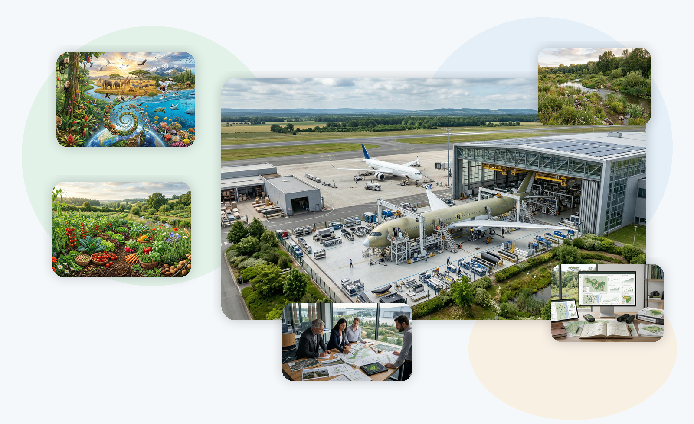
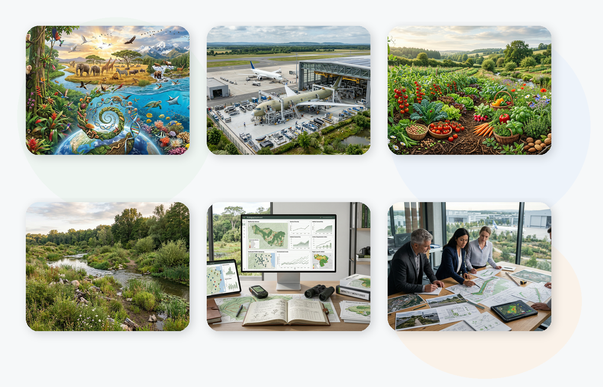

Foundations of biodiversity
In this module you will build the foundation of the course: what biodiversity means, what its three main levels are, what ecological functions it supports and which pressures are driving its loss.
Solid foundation
A digital course to understand what biodiversity is, why it matters at Airbus, how it relates to everyday decisions, and how to turn that learning into credible, practical improvements in your work environment.

Biodiversity affects risks, resources, decisions, communication and credibility within Airbus. Understanding it properly is the first step to acting with better judgement.
Biodiversity influences risks, resources, decisions, communication and credibility within Airbus.
Purchasing, food, maintenance, communication and use of the surrounding environment also matter.
Not every green initiative creates real ecological value.
Acting and communicating with sound judgement is key to avoiding empty messages.
Six structured modules, applied practical cases, short activities, visible progress and a closing section focused on shaping your own action plan.

The course is aimed at Airbus employees, both on the shop floor and in office roles, who want to understand biodiversity better, relate it to their own reality and turn that understanding into credible, useful and well-founded action.
Explained rigorously and applied to the Airbus context.
Fundamentals, Airbus and decisions, ending with your own proposal.
By the end, you will have a stronger foundation for interpreting biodiversity, assessing initiatives and formulating applicable proposals with greater judgement and credibility.
In this module you will build the foundation of the course: what biodiversity means, what its three main levels are, what ecological functions it supports and which pressures are driving its loss.

This module examines how aeronautics affects biodiversity from cradle to grave: design, materials, manufacturing, operation, maintenance, retirement from service and recycling.

This module explains why food and everyday habits influence biodiversity. It is not only about what we eat, but about the system that makes that food possible.

This module explains the difference between conserving, preserving, restoring and applying nature-based solutions, and how to distinguish between interventions with real ecological value and actions that are mainly cosmetic.

This module explains how to turn biodiversity actions into initiatives that are measurable, defensible and communicable with greater credibility. The key is not to accumulate data, but to select useful indicators.

This module turns the course learning into a proposal that can be applied in your work environment. The idea is to turn what you have learned into a clear, useful and realistic proposal for Airbus.
In this module you will build the foundation of the course: what biodiversity means, what its three main levels are, what ecological functions it supports and which pressures are driving its loss.


Biodiversity is the variety of life in all its forms, its relationships and the systems that sustain it.
Genetic diversity, species diversity and ecosystem diversity. Understanding all three avoids oversimplification.
Soil fertility, pollination, water regulation, climate stability, biological pest control and resilience.
Land-use change, pollution, overexploitation, climate change and invasive alien species.
A good understanding of biodiversity helps you prioritise better, communicate more rigorously and design more credible actions.
What information would you still need in order to understand a biodiversity problem properly before proposing an improvement?
This module examines how aeronautics affects biodiversity from cradle to grave: design, materials, manufacturing, operation, maintenance, retirement from service and recycling.


LCA is life cycle assessment; SAF stands for sustainable aviation fuels; ICAO is the International Civil Aviation Organization; CORSIA is the international carbon offsetting and reduction framework.
Design and development, production and industrialisation, operation and maintenance, and end of life with circularity.
Habitat, fauna, noise, lighting, water, drainage and the airport environment.
Climate, fuels, raw materials and supply chain.
More efficient design, better materials, sustainable fuels, operations and circularity.
In which phase of the cycle do you see the greatest room for improvement, and what data would you need to justify it?
This module explains why food and everyday habits influence biodiversity. It is not only about what we eat, but about the system that makes that food possible.


Production, processing, distribution, consumption and waste form a single chain.
Land-use change, landscape simplification, water use, pollution, fishing and waste.
Frequency, quantity, origin, processing and waste matter, not just the isolated product.
Which pressure is most likely? What information is missing? What pattern is being reinforced?
Cafeteria services, vending, catering and internal purchasing can also be reviewed with greater ecological judgement.
What small adjustment would reduce the most pressure on biodiversity in a shared environment?
This module explains the difference between conserving, preserving, restoring and applying nature-based solutions, and how to distinguish between interventions with real ecological value and actions that are mainly cosmetic.


Conservation, preservation, ecological restoration, nature-based solutions and ecological integrity are not the same thing.
Diagnosis, ecological reference, pressure reduction, recovery of functions and monitoring.
It exists when the intervention reduces pressures, improves functions, connectivity or the ecological condition of the system.
It contributes something, but only partially or narrowly, without substantially changing the condition of the ecosystem.
It makes the space more pleasant, but does not necessarily improve biodiversity in a significant way.
Which pressure does this intervention solve, and how would its ecological value be demonstrated?
This module explains how to turn biodiversity actions into initiatives that are measurable, defensible and communicable with greater credibility. The key is not to accumulate data, but to select useful indicators.


Indicator, metric, baseline, monitoring target, proxy and confidence limits.
Pressure, state, response or management indicators, and result or impact indicators.
Define the decision, set the scale and timeframe, choose variables and establish a baseline.
Confusing activity with impact, measuring only what is easy, failing to set a baseline and communicating too early.
A contextualised trend is worth more than an isolated number without explanation.
What would you measure here: pressure, state, response or impact?
This module turns the course learning into a proposal that can be applied in your work environment. The idea is to turn what you have learned into a clear, useful and realistic proposal for Airbus.


Outdoor areas, maintenance, purchasing, services, awareness and internal coordination.
What problem exists, where it appears, what pressure or weakness lies behind it, and why it deserves priority.
Objective, concrete action, implementation steps and minimum resources.
What will be measured, against which baseline, in what timeframe and with what cautious claim.
It is worth anticipating operational limits, ecological tensions or reputational risks caused by overstating the action.
What concrete proposal would you put forward today inside Airbus with a minimally credible monitoring approach?